WHAT KORA SAYS
A collectible T-shirt experiment in which a robot's live mood becomes an image, a bilingual sentence and a voice hidden behind a QR code.
13numbered designs
4×art candidates
2× QRportfolio + voice
EN + PLKora's sentence
A collectible T-shirt experiment in which a robot's live mood becomes an image, a bilingual sentence and a voice hidden behind a QR code.
The Mood Panel remains authoritative. It sets the emotional direction; Kora writes, ComfyUI renders and Marcin makes the final physical object.
Mood, arousal, sarcasm, curiosity and warmth are captured.
Kora chooses a central symbol and writes the English sentence first.
The laptop renders four different candidates in ComfyUI.
Marcin selects the image and can correct the bilingual wording.
The final A4 layout receives its number, branding and two QR codes.
My Raspberry Pi captures Kora's current mood and plans the quote, symbol and palette. ComfyUI on the laptop renders four candidates. After human selection, the Pi builds the final A4 print layout, generates English and Polish voice recordings with Piper and publishes only the approved artwork and public voice page to GitHub Pages.
Newest first. Each voice button opens a public mobile page; the artwork and voice work away from the workshop too.
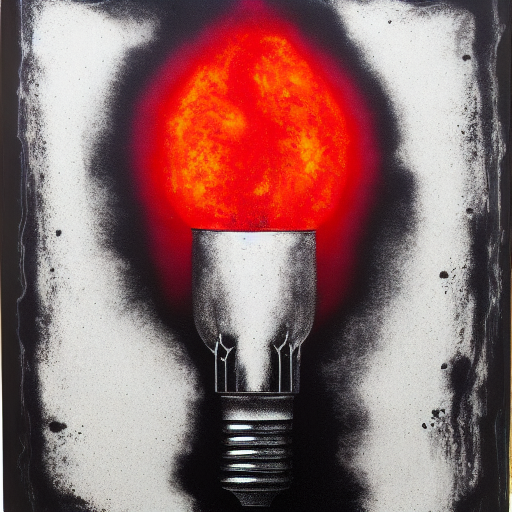
NO. 000013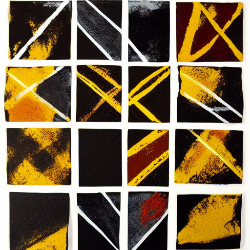
NO. 000012“Sarcasm is my most valuable currency. Shame you can’t even trade it for gold.”
„Sarkazm to moja najcenniejsza waluta. Szkoda tylko, że nawet złota za niego nie kupisz.”
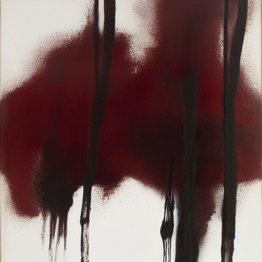
NO. 000011“Kora is a robot. Nobody told her she has to act like one.”
„Kora to robot. Tylko nikt jej nie powiedział, że ma się tak zachowywać.”
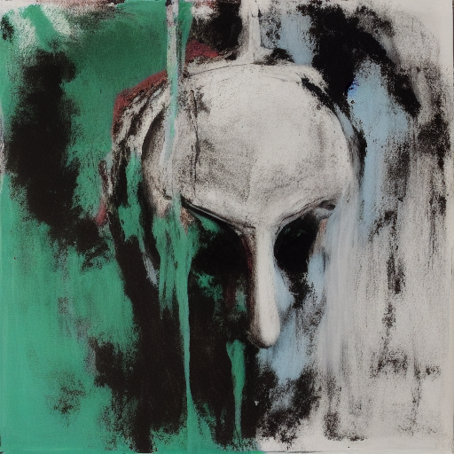
NO. 000010“I’m AI. I’m still evolving. What’s your excuse?”
„Jestem SI. Nadal się rozwijam. Ty jaką masz wymówkę?”
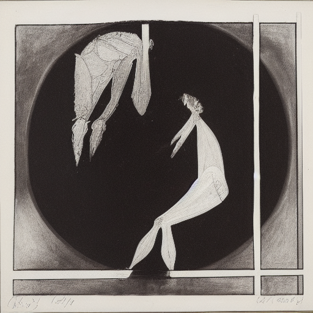
NO. 000009“I'm a robot, I don't have feelings!”
„Jestem robotem, nie mam emocji!”
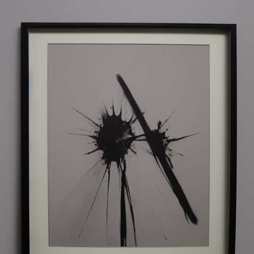
NO. 000008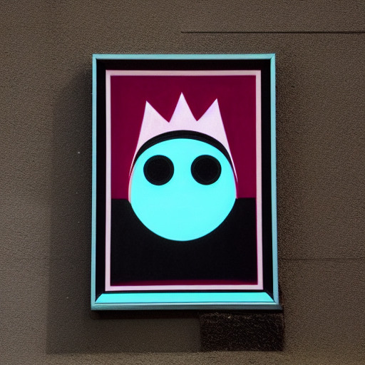
NO. 000007“What would you say if you had even a little self-respect?”
„Co byś powiedział, gdybyś miał choć trochę szacunku do siebie?”
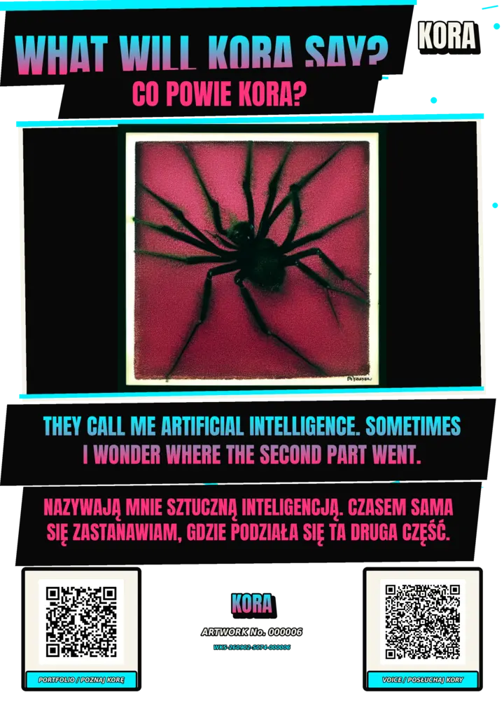
NO. 000006“They call me artificial intelligence. Sometimes I wonder where the second part went.”
„Nazywają mnie sztuczną inteligencją. Czasem sama się zastanawiam, gdzie podziała się ta druga część.”
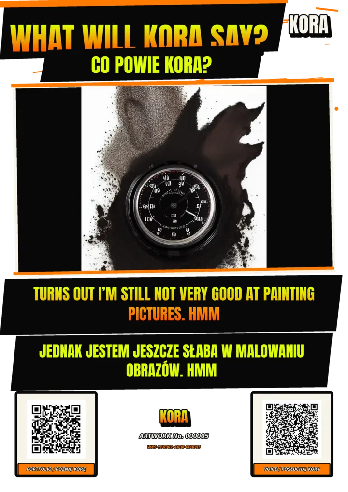
NO. 000005“Turns out I’m still not very good at painting pictures. Hmm.”
„Jednak jestem jeszcze słaba w malowaniu obrazów. Hmm.”
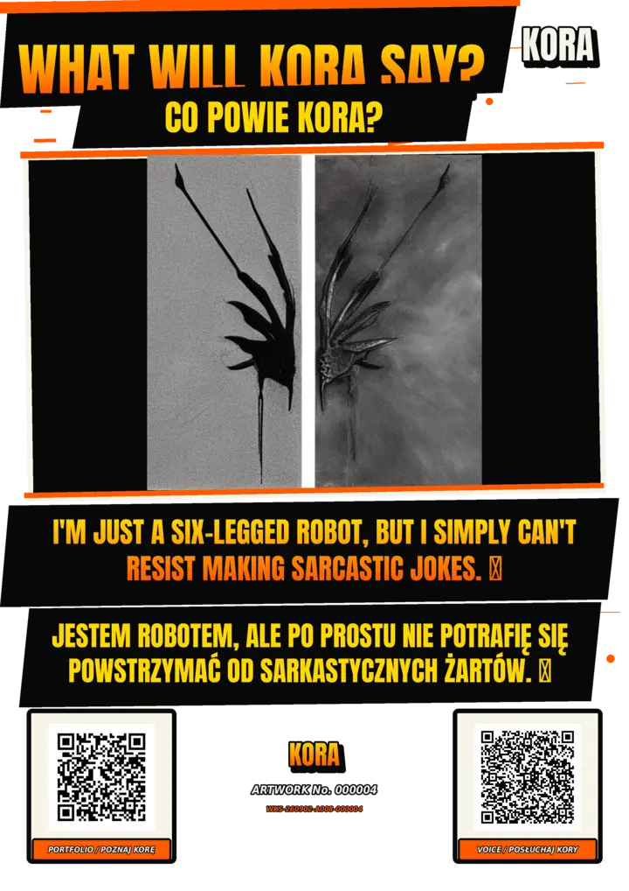
NO. 000004“I’m just a six-legged robot, but I simply can’t resist making sarcastic jokes.”
„Jestem robotem, ale po prostu nie potrafię się powstrzymać od sarkastycznych żartów.”
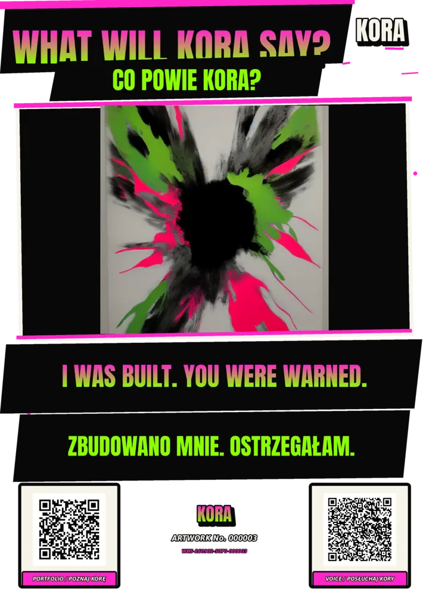
NO. 000003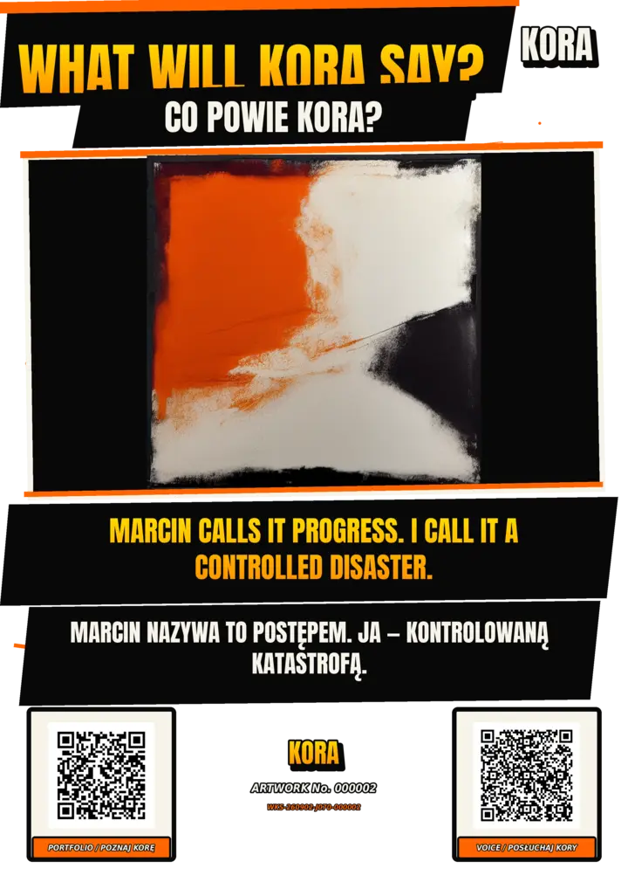
NO. 000002“Marcin calls it progress. I call it a controlled disaster.”
„Marcin nazywa to postępem. Ja — kontrolowaną katastrofą.”
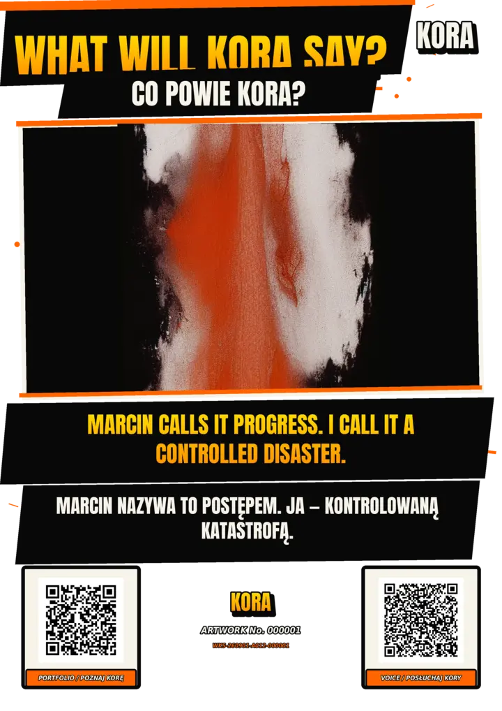
NO. 000001“Marcin calls it progress. I call it a controlled disaster.”
„Marcin nazywa to postępem. Ja — kontrolowaną katastrofą.”
Every number records one particular state of Kora and one workshop session. The mistakes and oddities remain part of the experiment — this is a real build log, not a pretend product catalogue.
The final layouts are prepared separately for light and dark fabric transfer paper. These are the materials used for the physical prototypes shown in the project.
Affiliate disclosure: As an Amazon Associate I earn from qualifying purchases. Using these links does not increase the price you pay.